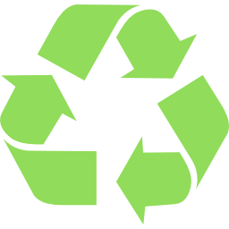
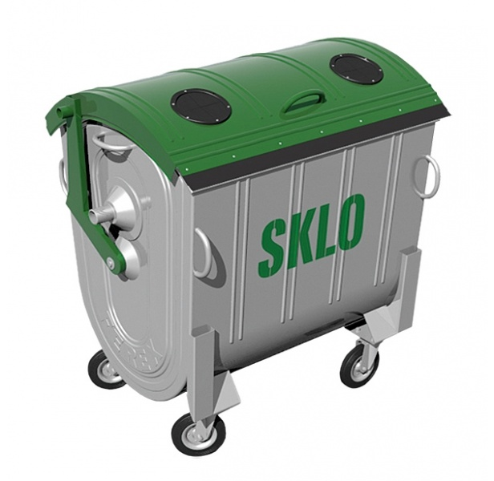
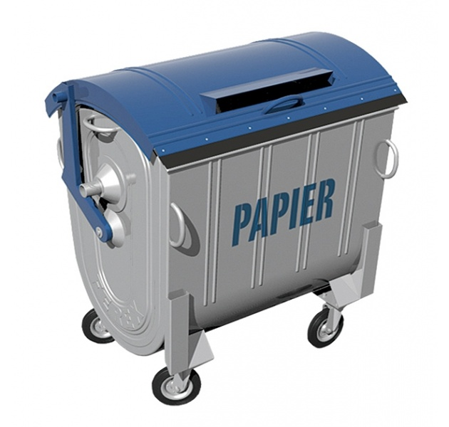
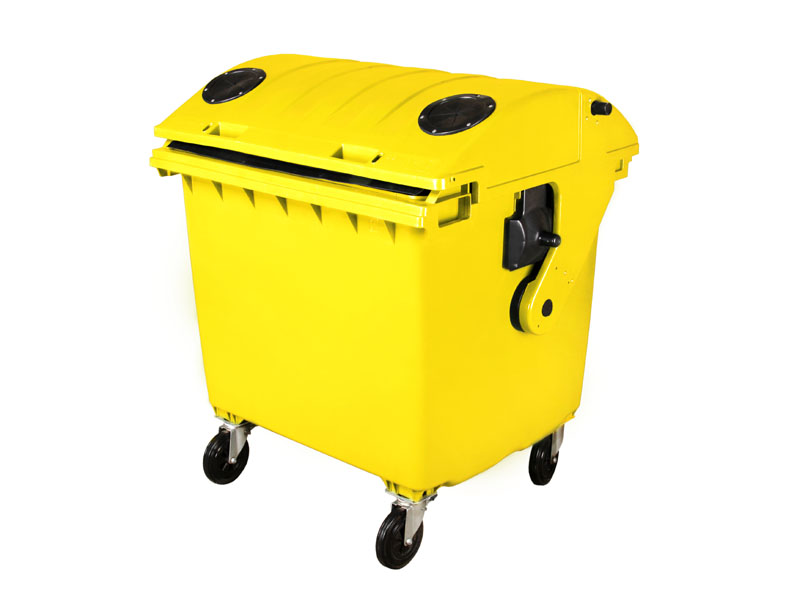
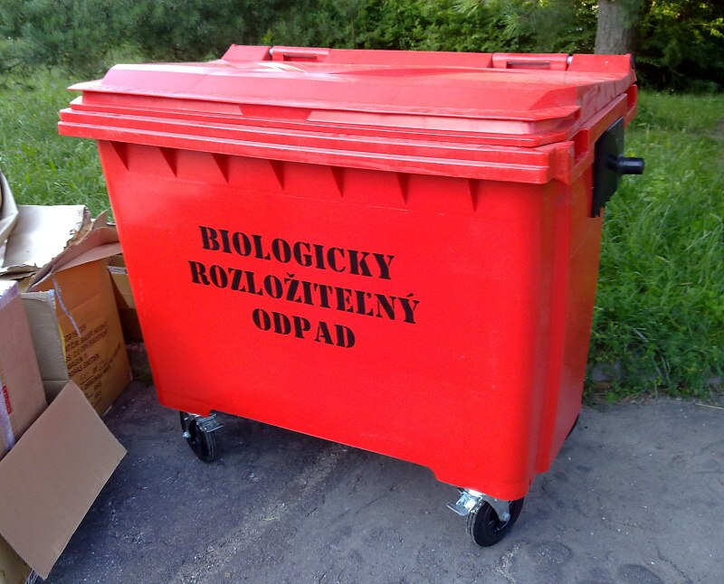

RECYKLÁCIA
Kontajner na recykláciu skleného odpadu. Recyklácia je proces opätovného využitia predtým už použitých materiálov a produktov (napr. recyklácia papiera, farebných a ostatných kovov, skla, plastov a pneumatík,...). Recyklácia zabraňuje plytvaniu zdrojov, redukuje spotrebu surových prírodných materiálov, redukuje množstvo uskladnených odpadov a redukuje spotrebu energie, čím prispieva k redukcii emisií skleníkových plynov oproti použitiu surových materiálov.
Sklo - Zelená
Sklo patrí medzi najstaršie používané materiály a jeho história siaha 3000 rokov do starého Egypta. Vyrába sa tavením z vysoko kremičitého piesku (sklársky piesok), má inertné vlastnosti a jeho výhodou je prakticky neobmedzený počet cyklov recyklácie (ide o dokonalú recykláciu a teda zo starej fľaše sa dá vyrobiť rovnaká nová fľaša). Sklenené črepy vo výrobe skla nahrádzajú ¼ sklárskeho piesku a znižujú potrebné množstvo energie na roztavenie o 25 %.
Papier - Modrá
Papier je veľmi dobre recyklovateľný, ale pri každom recyklačnom cykle sa jeho vlákna skracujú a tak je možné ho recyklovať maximálne sedem krát. Jeho recykláciou šetríme lesy a znižujeme množstvo chemických látok vypúšťaných do ovzdušia pri výrobe.
Plast - Žltá
Ich separáciou šetríme primárne zdroje – ropu, a tiež energiu na ťažbu. Nevýhodou je, že recyklácia plastov nie je dokonalá. Z recyklovanej PET fľaše už nikdy nebude PET fľaša. Plast sa podrví na vločky alebo spracuje na vlákna a použije sa ako prímes pri výrobe lavičky či fleecovej bundy. No tu už je skombinovaný s iným materiálom a preto ho už nebude možné opäť recyklovať. Čiže ďalší krok je skládka.Po ich odvoze nasleduje ešte manuálne dotriedenie na triediacej linke, kde sa oddeľujú PET fľaše, hliníkové plechovky, tetrapaky a kov.
KOv - Červená
Kovové obaly sa dajú veľmi efektívne recyklovať. Najčastejšie sa môžete stretnúť s hliníkom (ALU) v podobe plechoviek od nápojov a železom (FE) v podobe konzerv.Na zber tohto druhu odpadu sa používajú buď samostatné kontajnery ČERVENEJ FARBY, alebo sa zbierajú spoločne s plastom v žltých kontajneroch.
